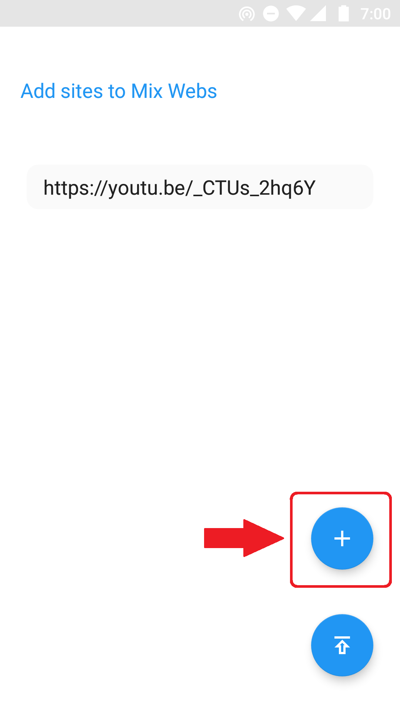

Webpack for Webvery
In this guide we will learn,
How to create new Webpack
step by step.
Here we will create Webpack that contains all type of mix data like videos, images, apps and other helpful websites.
1. Open Webvery App and Click on 'Create New Webpack' from Menu.
2. Now give the name of Webpack. Here we will give it 'Mix Webs' because this webpack is created for mix type of contains. You can give any name as per the contains of webpack like Tech Video, Sports , Games , Free Software etc.
After Giving name press Next.
3. Now Select icon for Webpack and press Next.
4. Now we need to add urls to the Webpack. Write or paste url and press + button to add it to Webpack.

5. One by one add all of urls. After adding all urls press publish button.
6. It will confirm your Webpack name and the websites or urls in that Webpack. Confirm it and click on PUBLISH.
7. Congratulations your Webpack is now successfully published. Now anyone can access your Webpack and all urls with this Webpack ID. Now to share it with others click on Share Now.
8. It will give you Webpack Link which you can share with anyone, for here it is :
https://webvery.github.io/?1629VON5L
Where 1629VON5L is Webpack Id.
9. Now anyone click on your Webpack link or Import this Webpack will get your Webpack and all urls that you published on Webpack.
To get all published and imported webpacks press Imported Webpacks from Menu.
From here you can manage all your Webpacks and can share webpacks with others.
© 2019 Webpack for Webvery by sdm Apps.